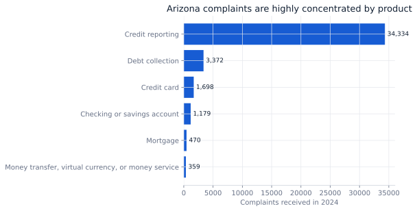
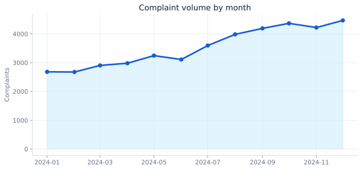

Decision brief
Where should risk operations place capacity?
A timely-response KPI can look excellent while volume exposure remains highly concentrated. The analysis therefore separates execution quality (timely response and routing speed) from portfolio risk (concentration by product, company, issue, and month).
Use a two-layer operating model: maintain broad service controls, but allocate specialist capacity and root-cause work to the concentrated credit-reporting and top-company segments.
Data & grain
Complaint-level administrative records
The analytical grain is one CFPB complaint. The extract is limited to complaints with an Arizona mailing state and a received date from January 1 through December 31, 2024.
| Field group | Examples | Analytical use |
|---|---|---|
| Identity | Complaint ID | Uniqueness and record control |
| Time | Date received, date sent | Trend and routing lag |
| Taxonomy | Product, issue, sub-issue | Concentration and root-cause segmentation |
| Entity | Company, state, ZIP | Exposure and ownership |
| Outcome | Company response, timely response | Service-performance KPI |
Quality controls
Trust before trend
42,426 records and 42,426 distinct complaint IDs; no deduplication loss.
All received timestamps parsed successfully and fell inside the stated period.
Every record retained the expected AZ state code after ingestion.
The received-to-company-sent interval is near-real-time; negative lags are tested before use.
Complaint counts are not incidence rates. They reflect consumer behavior, awareness, CFPB intake, and company footprint—not only underlying product quality.
Findings
High service performance, concentrated exposure

Credit reporting accounts for 80.93% of all records, making aggregate KPIs highly sensitive to one operating domain.
The five highest-volume companies account for 82.96% of complaints, supporting targeted governance reviews.
December is the peak month with 4,467 complaints; capacity plans should be refreshed using rolling monthly volume.
99.68% were marked timely, so improvement work should move beyond the headline SLA to recurrence and issue severity.

SQL pattern
Reusable Pareto analysis
WITH company_volume AS (
SELECT
company,
COUNT(DISTINCT complaint_id) AS complaints,
AVG(CASE WHEN timely_response = 'Yes' THEN 1.0 ELSE 0.0 END) AS timely_rate
FROM fact_complaint
WHERE state_code = 'AZ'
AND received_date >= DATE '2024-01-01'
AND received_date < DATE '2025-01-01'
GROUP BY company
)
SELECT *,
SUM(complaints) OVER (ORDER BY complaints DESC) /
SUM(complaints) OVER () AS cumulative_share
FROM company_volume
ORDER BY complaints DESC;Operating actions
Move from SLA reporting to risk reduction
Report timely response by product, issue, and company instead of only in aggregate.
Track repeat issue-company pairs and escalation patterns across rolling 30/90-day windows.
Alert when segment volume exceeds its trailing average by a documented threshold.
Limitations
What the data cannot establish
- Complaint volume does not measure company market share or a true complaint rate.
- Consumer narratives were not required for this analysis; issue labels are self-reported.
- Timely response is a process measure, not proof of satisfactory resolution.
- The analysis is descriptive; it does not claim that a company or product caused complaints.